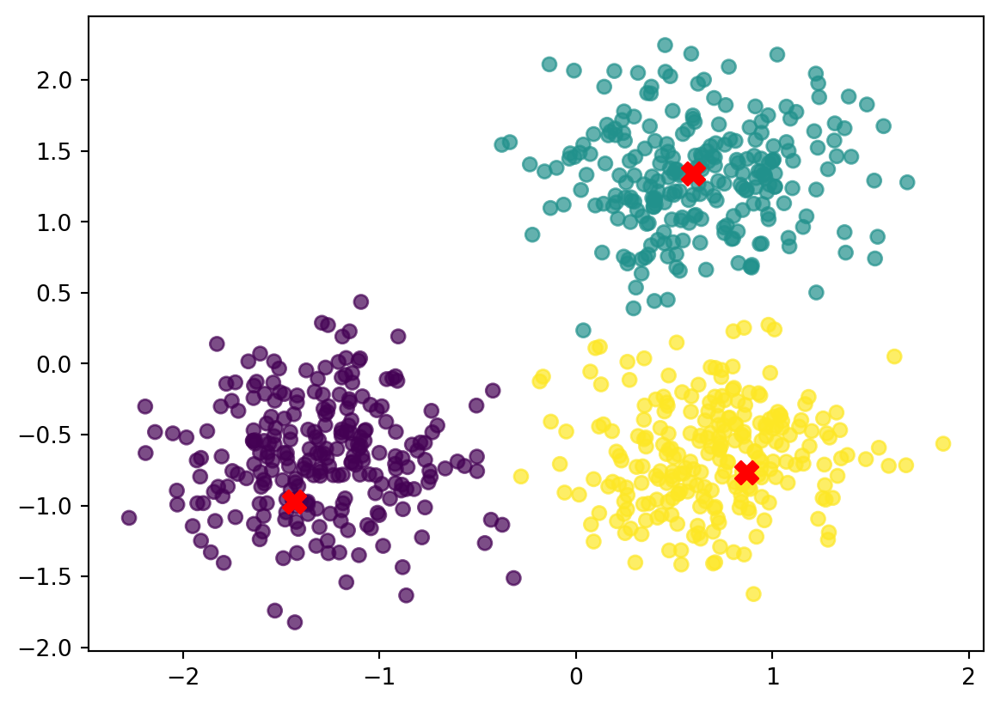
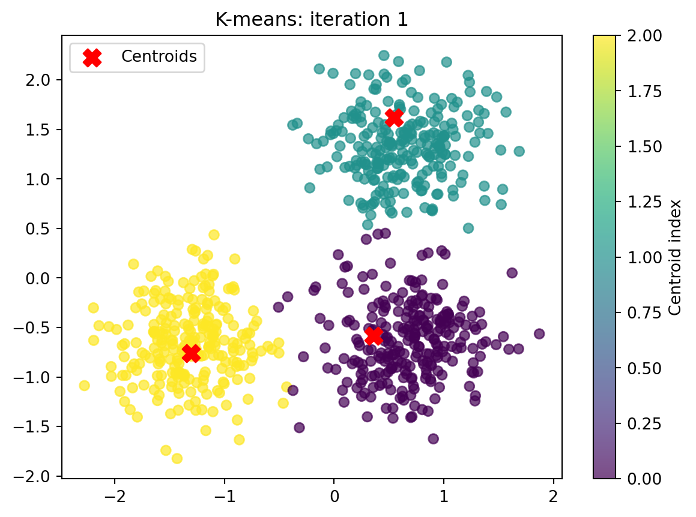
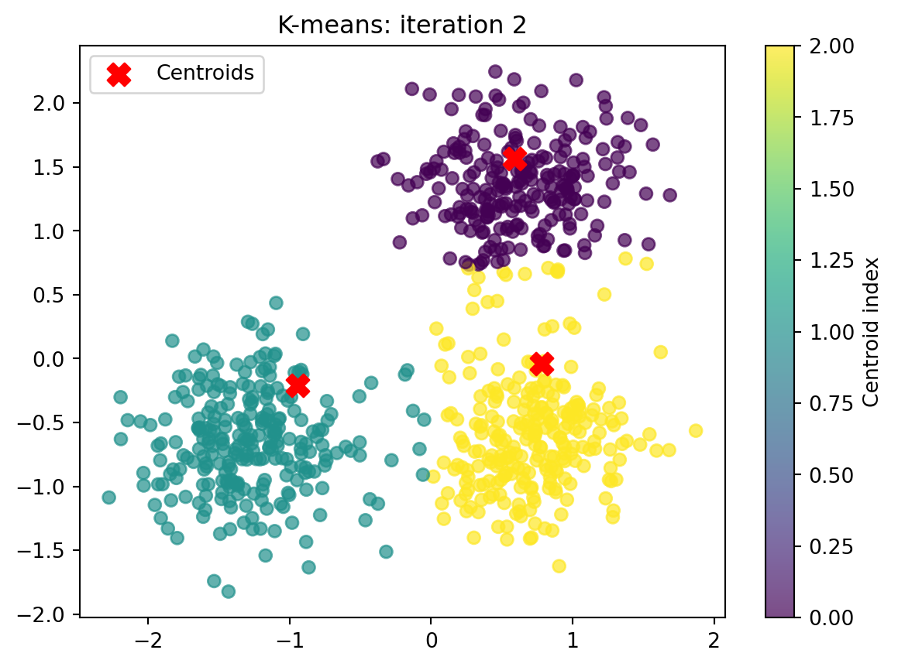
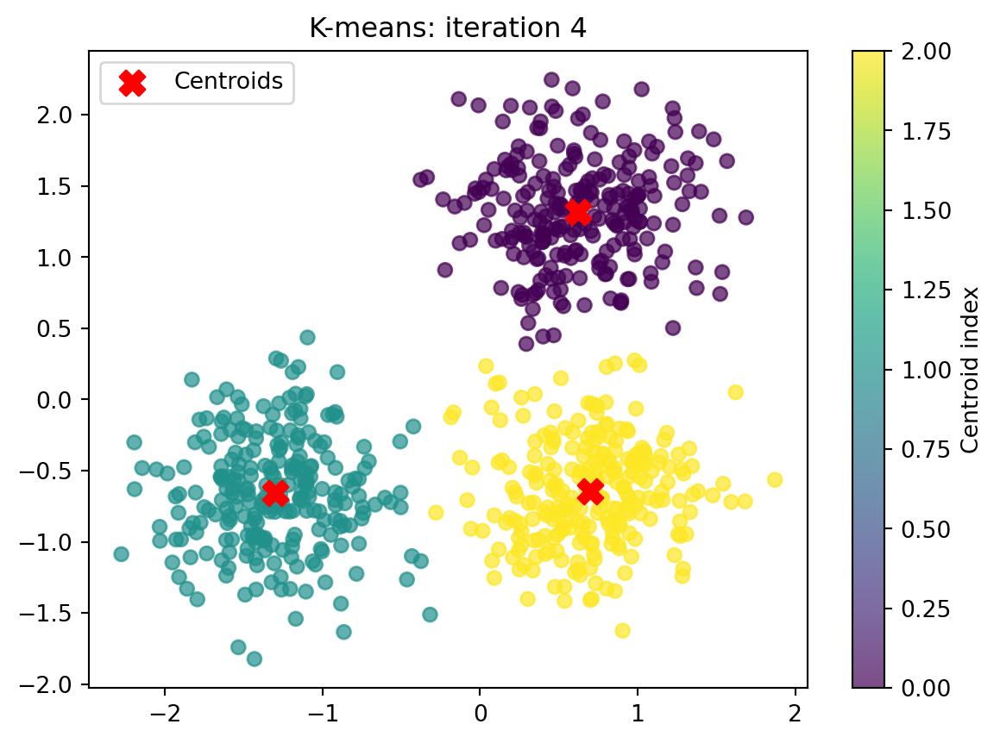
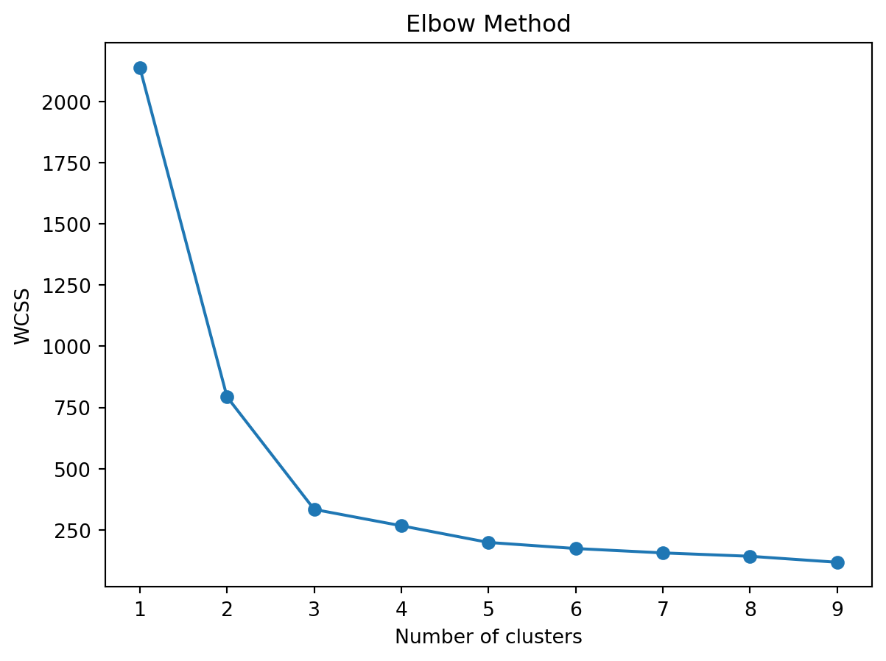

import numpy as np
from sklearn.datasets import make_blobs
from sklearn.preprocessing import StandardScaler
import matplotlib.pyplot as plt
from sklearn.cluster import k_means
import matplotlib.pyplot as pltClustering from scratch
The aim of k-means clustering is to group a set of data points into k distinct clusters based on their similarity, such that:
- Each cluster has a “center” (called the centroid), which is the average of the data points in that cluster.
- Data points are assigned to the cluster with the nearest centroid, so items in the same cluster are more similar to each other than to items in other clusters.
- Let’s generate some data:
centers = [[1, 1], [-1, -1], [1, -1]]
data, labels_true = make_blobs(
n_samples=750, centers=centers, cluster_std=0.4, random_state=0
)
data = StandardScaler().fit_transform(data) # make sure we have clusters that are of roughly equal size
print(data)
data.shape[[ 0.49426097 1.45106697]
[-1.42808099 -0.83706377]
[ 0.33855918 1.03875871]
...
[-0.05713876 -0.90926105]
[-1.16939407 0.03959692]
[ 0.26322951 -0.92649949]](750, 2)- Let’s make a simple plot of the data:
fig,ax = plt.subplots()
ax.scatter(data[:,0], data[:,1])
plt.show()
The plots clearly shows 3 clusters. Our aim is to identify these three clusters from the image.
K - means clustering explained
- Initialize cluster centroids.
Pick k starting points (“centroids”), usually randomly. These are the initial guesses for the centers of your clusters.
- Assign points to the nearest centroid.
For each data point, calculate the distance to each centroid (e.g., using Euclidean distance) and assign the point to the closest one.
- Update the centroids.
Once points are grouped, recalculate the centroid of each cluster — this becomes the new center (mean position) of the cluster.
- Repeat steps 3 and 4.
Continue assigning points and updating centroids until:
• The assignments don’t change anymore (algorithm has converged), or
• You reach a maximum number of iterations.1 Initialize cluster centroids
Task: Drawing random centroids
Copy the code from above to create the data. Recreate the plot.
Inspect the data. The data is structured in x-y coordinates: All x coordinates are in column 1, the corresponding y coordinates are in column 2.
Draw three random points from the data to initialize the centroids (you can use the
randompackage). Plot them into the plot in red.
Solution
import random
# Select 3 random rows from data
indices = random.sample(range(0, 749), 3) #draw 3 random points within range 750
centroids = data[indices, :] # select those points from the data
print(centroids)
# add to plot
fig,ax = plt.subplots()
ax.scatter(data[:,0], data[:,1])
ax.scatter(centroids[:, 0], centroids[:, 1], color='red', s=100, marker='X', label='Centroids')
plt.show()[[ 0.88263041 -0.20465295]
[ 0.49344827 -0.82079227]
[ 0.15853059 1.68427935]]
2. Assigning points to the nearest centroids.
Now that we have our initial guesses for the centroids, we can go to step 2.
We will run this step in a two nested loops. The aim of this step is to assign each point from data to the nearest cluster centoid.
The first loop runs trough the rows of data, takes one row each. In a second, inner loop, we cacluate the distance from the three centroids.
Euclidean distance between two points
But first we need a measure to evaluate the distance between two data points.
We use the euclidean distance betwen two vectors \(\mathbf{x}, \mathbf{y}\):
\[d(\mathbf{x}, \mathbf{y}) = \sqrt{\sum_{i=1}^{n} (x_i - y_i)^2}\]
Task: Euclidean distance
Write a function that calculates the euclidean distance between two data points (which are defined by an x and a y coordinate). Run the function to calculate the euclidean distance between the first row of data and the first row in centroids
Solution
def calculate_euclidean_distance(point1, point2):
return np.sqrt(np.sum((point1 - point2) ** 2))
calculate_euclidean_distance(data[0], centroids[0])1.7006584834349796Task Inner loop
Write a loop to compare the first row of data to all three rows of centroids. Compare the outcomes. Save which centroid is the closest.
Solution
results =[]
for i, entry in enumerate(centroids):
distance = calculate_euclidean_distance(data[0], entry)
results.append(distance)
closest_index = np.argmin(results)
print(closest_index)2Task: Outer loop
Now put this loop into an outer loop, iterating over data.
Solution
closest_index = []
for j, row in enumerate(data):
results = []
for i, entry in enumerate(centroids):
distance = calculate_euclidean_distance(row, entry)
results.append(distance)
# Append the index of the centroid closest to this data point
closest_index.append(np.argmin(results))
print(closest_index)[2, 1, 2, 1, 2, 2, 1, 0, 0, 2, 1, 1, 1, 0, 1, 2, 1, 1, 1, 1, 1, 1, 0, 1, 1, 1, 1, 2, 2, 0, 2, 1, 1, 2, 1, 2, 0, 2, 2, 1, 0, 1, 1, 1, 1, 1, 2, 0, 2, 1, 0, 0, 1, 1, 0, 1, 1, 2, 1, 1, 1, 0, 0, 0, 1, 2, 0, 1, 2, 2, 2, 1, 2, 2, 0, 1, 2, 1, 2, 1, 1, 1, 0, 2, 2, 2, 1, 0, 1, 1, 1, 2, 1, 2, 1, 0, 1, 1, 2, 2, 1, 1, 1, 2, 0, 0, 1, 0, 0, 0, 2, 1, 1, 2, 1, 0, 2, 1, 2, 1, 1, 1, 2, 2, 1, 0, 1, 2, 2, 0, 2, 1, 1, 1, 2, 1, 1, 1, 2, 1, 2, 0, 2, 2, 1, 1, 1, 0, 1, 0, 1, 1, 1, 1, 1, 1, 2, 1, 2, 1, 0, 1, 2, 1, 1, 1, 1, 0, 1, 1, 2, 1, 1, 0, 1, 1, 1, 1, 1, 0, 1, 0, 0, 0, 1, 0, 2, 1, 2, 1, 2, 1, 1, 1, 1, 2, 2, 1, 1, 0, 1, 0, 0, 1, 1, 2, 0, 2, 0, 0, 2, 1, 0, 1, 2, 2, 1, 1, 1, 1, 1, 0, 0, 1, 1, 1, 2, 2, 1, 2, 2, 2, 1, 2, 1, 1, 1, 0, 1, 1, 2, 1, 0, 1, 1, 0, 1, 1, 2, 2, 1, 1, 1, 2, 1, 2, 0, 2, 1, 0, 0, 1, 0, 1, 1, 2, 2, 1, 1, 2, 2, 1, 1, 0, 0, 1, 1, 1, 1, 1, 2, 1, 1, 2, 1, 1, 1, 2, 0, 1, 2, 2, 0, 2, 0, 2, 0, 1, 2, 2, 2, 1, 1, 1, 1, 1, 2, 1, 1, 2, 2, 1, 1, 1, 1, 1, 1, 2, 1, 1, 1, 1, 0, 2, 1, 1, 1, 2, 1, 2, 1, 1, 0, 2, 2, 0, 2, 1, 1, 2, 1, 2, 1, 2, 1, 0, 2, 1, 2, 1, 2, 0, 1, 1, 1, 1, 1, 2, 1, 2, 0, 1, 1, 0, 2, 1, 2, 1, 2, 2, 2, 2, 1, 2, 0, 2, 1, 2, 1, 1, 1, 1, 1, 2, 1, 1, 2, 1, 1, 2, 1, 0, 1, 1, 0, 1, 1, 1, 1, 1, 0, 2, 1, 1, 1, 1, 2, 1, 2, 1, 1, 0, 1, 0, 0, 1, 0, 2, 1, 1, 1, 1, 1, 0, 1, 2, 2, 2, 2, 1, 2, 0, 1, 2, 1, 0, 2, 2, 1, 2, 1, 1, 2, 1, 2, 0, 0, 1, 1, 1, 0, 2, 1, 2, 2, 1, 2, 1, 1, 1, 1, 1, 2, 1, 0, 0, 1, 1, 1, 1, 2, 2, 2, 1, 0, 1, 1, 1, 2, 2, 1, 1, 1, 2, 2, 0, 2, 1, 2, 1, 1, 2, 1, 1, 1, 2, 0, 2, 1, 1, 1, 2, 0, 2, 2, 1, 1, 1, 1, 2, 1, 2, 1, 2, 2, 0, 2, 1, 1, 1, 1, 1, 2, 1, 2, 1, 1, 2, 2, 1, 2, 1, 1, 0, 1, 1, 1, 1, 1, 0, 1, 1, 1, 1, 1, 2, 2, 0, 1, 1, 0, 2, 0, 2, 1, 1, 2, 1, 1, 2, 2, 1, 0, 1, 0, 0, 2, 0, 1, 1, 2, 1, 2, 2, 1, 2, 1, 1, 2, 1, 2, 1, 1, 1, 1, 2, 2, 2, 1, 1, 1, 1, 1, 1, 1, 1, 2, 0, 1, 1, 2, 2, 1, 2, 0, 1, 0, 1, 2, 0, 1, 2, 0, 1, 2, 2, 1, 2, 2, 2, 1, 2, 1, 2, 2, 1, 1, 2, 2, 1, 0, 1, 2, 2, 2, 2, 0, 1, 1, 1, 0, 1, 2, 2, 1, 1, 0, 1, 0, 2, 1, 0, 0, 1, 2, 2, 0, 1, 1, 0, 2, 2, 1, 0, 0, 2, 1, 1, 1, 1, 1, 2, 2, 1, 1, 0, 2, 1, 1, 1, 0, 1, 1, 1, 1, 0, 1, 1, 2, 0, 1, 1, 2, 2, 2, 1, 1, 0, 2, 2, 0, 1, 1, 1, 1, 1, 2, 1, 1, 0, 1, 1, 1, 0, 2, 0, 2, 1, 0, 2, 2, 0, 1, 0, 2, 0, 2, 2, 2, 1, 0, 0, 1, 1, 2, 1, 2, 2, 1, 2, 0, 1, 1, 1, 1, 2, 1, 1, 1, 1]Assigning the points.
Now that we have all the nearest clusters, plot color the points based on their assignment to the nearest cluster.
Solution
fig,ax = plt.subplots()
scatter = ax.scatter(data[:, 0], data[:, 1], c=closest_index, cmap='viridis', alpha=0.7)
ax.scatter(centroids[:, 0], centroids[:, 1], color='red', s=100, marker='X', label='Centroids')
plt.savefig("imgs/cluster_assignment.png")
plt.show()
3. Calculate new mean per cluster
We have now assigned all points to these first 3 clusters. Now we calculate the new cluster mean per cluster.
First, we add the vector containing the assignment to the cluster to the data frame.
data = np.column_stack((data, closest_index)) # add closest_index as columnThen we calculate the new means of those clusters.
Solution
# Calculate the new_centroids
k = 3 # Number of clusters
new_centroids =[]
for i in range(k):
#print(i)
# Mask data belonging to cluster i
cluster_points = data[data[:,2]==float(i)]
centroid = cluster_points[:, :2].mean(axis=0)
# Compute mean of these points
new_centroids.append(centroid)
print(new_centroids)[array([ 0.88225376, -0.16697143]), array([-0.62581587, -0.74159471]), array([0.57427549, 1.36351284])]Plot the new centroids
we can now plot the new centroids, by updaing the first plot.
new_centroids = np.array(new_centroids) # Convert list to (k, 2) NumPy array
fig, ax = plt.subplots()
scatter = ax.scatter(data[:, 0], data[:, 1], c=closest_index, cmap='viridis', alpha=0.7)
# Now this works
ax.scatter(new_centroids[:, 0], new_centroids[:, 1], color='red', s=100, marker='X', label='Centroids')
plt.savefig("imgs/cluster_assignment2.png")
plt.show()
Repeat. Reassign the points.
We now do steps 3 and 4, until the centroids are stable.
Putting it all together:
import numpy as np
import matplotlib.pyplot as plt
import random
# --- Settings ---
k = 3
max_iters = 10 # Keep small for now
# --- Use only x,y coordinates (keep it simple) ---
X = data[:, :2] # if data has 2 cols already, this is identical
n = X.shape[0]
# --- 1) Initialize centroids by sampling rows from data ---
indices = random.sample(range(n), k)
centroids = X[indices, :].copy()
# --- Distance function (your version) ---
def calculate_euclidean_distance(point1, point2):
return np.sqrt(np.sum((point1 - point2) ** 2))
# Plot helper
def plot_clusters(X, labels, centroids, i):
fig, ax = plt.subplots()
scatter = ax.scatter(X[:, 0], X[:, 1], c=labels, cmap='viridis', alpha=0.7)
ax.scatter(centroids[:, 0], centroids[:, 1], color='red', s=120, marker='X', label='Centroids')
ax.set_title(f"K-means: iteration {i+1}")
ax.legend()
plt.colorbar(scatter, ax=ax, label="Centroid index")
plt.show()
# --- 2) Iterate: assign -> update -> plot ---
for it in range(max_iters):
# Assign each point to nearest centroid (your nested-loop style)
closest_index = []
for j, row in enumerate(X):
distances = [calculate_euclidean_distance(row, c) for c in centroids]
closest_index.append(int(np.argmin(distances)))
closest_index = np.array(closest_index, dtype=int)
# Plot current state
plot_clusters(X, closest_index, centroids, it)
# Update centroids
new_centroids = []
for i in range(k):
cluster_points = X[closest_index == i]
if cluster_points.size > 0:
centroid = cluster_points.mean(axis=0)
else:
# reinit empty cluster to a random point
centroid = X[random.randrange(n)]
new_centroids.append(centroid)
new_centroids = np.array(new_centroids)
# Stop if nothing changes
if np.allclose(new_centroids, centroids):
print(f"Converged after {it+1} iteration(s).")
break
centroids = new_centroids
print(f"Finished after {it+1} iteration(s).")
print("Final centroids:\n", centroids)


Converged after 4 iteration(s).
Finished after 4 iteration(s).
Final centroids:
[[-1.30266211 -0.65704205]
[ 0.6954587 -0.64442334]
[ 0.62260555 1.3172598 ]]Evaluation metrics
We have now decided to cluster into 3 clusters. But how do we know that is this the right amount of clusters? We can use a measure called inertia, which is the summed distance from all points to their respective cluster centroid:
\[\text{Inertia} = \sum_{i=1}^{k} \sum_{\mathbf{x} \in C_i} \|\mathbf{x} - \boldsymbol{\mu}_i\|^2\]
where:
• $C_i$ is the set of points belonging to cluster i
• $\boldsymbol{\mu}_i$ is the centroid of cluster iScikit-learn
First, we make the clustering a bit easier. The scikit-learn package allows clustering with a single line of code.
1. Install scikit-learn into your .venv
pip install -U scikit-learn2. Clustering with scikit-learn
We repeat the clustering approach from above with one line of code:
centroid, label, inertia = k_means(
data, n_clusters=3, n_init="auto", random_state=0
)As we can see, the function returns three results: centroids (the location), labels (the assignments) and inertia.
We can now easily loop over this function to find the optimal amount of clusters, by comparing inertia. We then plot the inertia for each loop in an elbow plot:
elbow = list() # list to store interias
for k in range(9):
centroid, label, inertia = k_means(
data, n_clusters=k+1, n_init="auto", random_state=0
)
elbow.append(inertia)3. Generate elbow plot.
Let’s generate an elbow plot to plot the inertia:
plt.plot(range(1, 10), elbow, marker='o')
plt.title('Elbow Method')
plt.xlabel('Number of clusters')
plt.ylabel('WCSS')
plt.show()